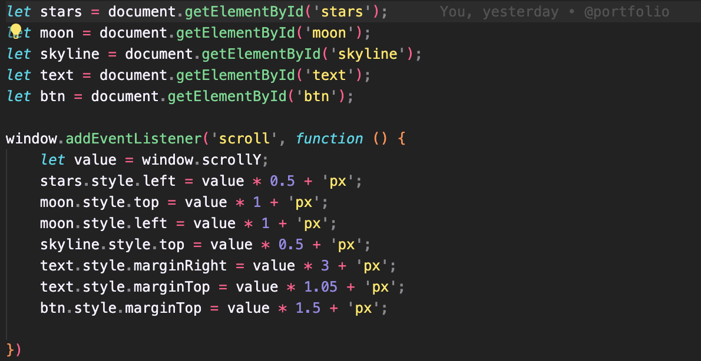
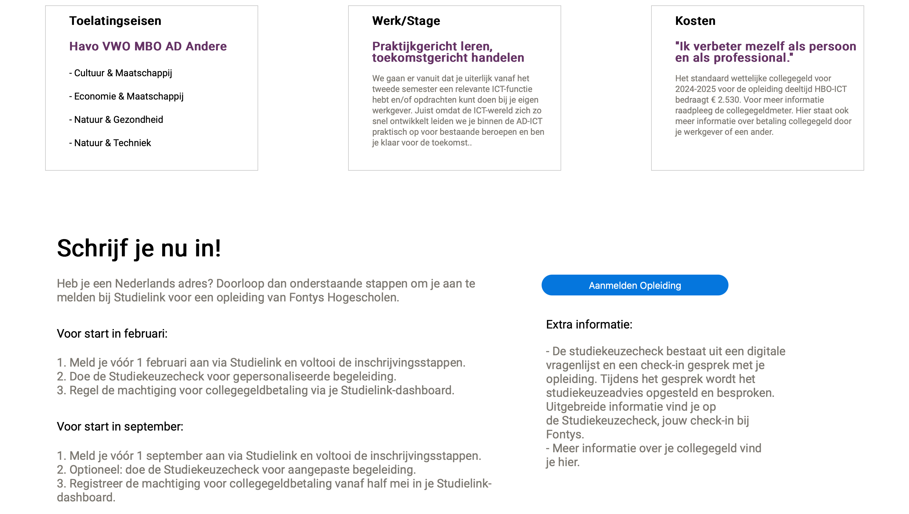
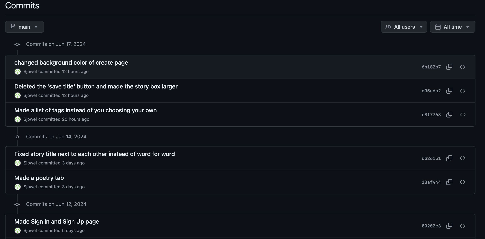
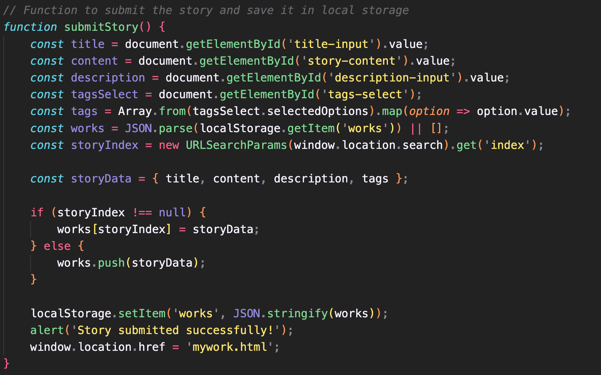

Development and Version Control
"You explore front-end development languages, you write code and document in a version control environment."
Portfolio
For this learning outcome I made a Portfolio website with HTML, CSS and JavaScript. For the landing page I used a parallax effect for the moon, the stars and my name. I used a YouTube video to see how to make a parallax effect.

The first part ensures that I'm making a new variable for every picture I have on my landing page with the ID I made for them.
The second part ensures that all the "IDs" or Pictures move a certain amount of pixels when I scroll down and to which side it has to go when I scroll.
I went to Maikel to ask feedback on my JavaScript because in my third review I got the feedback that it could be easier written. Maikel told me that I had to change the 'let' into 'const' of the parallax effect, because I only use them once, and I could delete the Semicolon because they aren't used in JS anymore. So I changed that.
I learned how to make a parallax effect on my website and I am also proud that I made it work.
I learned how I to make sure that when I press a button the screen would scroll down instead of going to a new page, and what the difference is in the code with when you press the button and you go to a new page.
Version Control
I made a Repository for my website and pushed my code to Github. I didn't really know how it worked so I did research first and asked a friend.
Here's the link to my GitHub.
Project 3: Development
For project 3 we had to make the website for Fontys OVP. We decided to split it up into 3 parts because we had a group of 3. one was making the home page, one was making the top part of the ovp page, and I made the bottom part. Sadly the group worked with PHP and we couldn't find a way for that to work on my computer, so I made my part in HTML, based on a design Lindy made in Figma, and I sent it to my groupmate to add it into the main file. So I didn't do anything with version control on here.

here a part of the html page as proof I made it in VScode.

I didn't really learn anything extra from this project only to communicate better, but not based on Development and version control, because I already knew the development parts I used on here and didn't do any version control, which is not good.
Project x
Version Control
For my Project X I wanted to get more familiar with Github and understand more of it because I haven't really used it before and I haven't used it in the previous project. So this project was the perfect opportunity to do it.
Julian (A friend of mine) knows a lot about Git so he learned me the basics. When I started working with it I realised how nice it was to use it, and to look back to the commits which were made so it was clear what was already done.

Here is the link to my commits from Project X.
I've learned how to use the basics of GitHub and how to keep track of the things you've already done for your website and that it is very useful to use for the development projects.
I also wanted to get more familiar with JavaScript, because I never really used it in the websites I made because I didn't really know how to use it.
The next part I made with ChatGPT because I couldn't find out how it worked. 
I tried to understand what was done here.
The function "submitStory()" has as target to save a story of the user in the local storage (localStorage) from the web browser.
The first three lines: 'const title = document.getElementById('title-input').value;
const content = document.getElementById('story-content').value;
const description = document.getElementById('description-input').value;'
retrieve the values from the HTML input fields for the story's title, content, and description.
The next two lines: 'const tagsSelect = document.getElementById('tags-select');
const tags = Array.from(tagsSelect.selectedOptions).map(option => option.value);'
get the selected tags from a multi-select dropdown and convert them into an array of values.
The next line: 'const works = JSON.parse(localStorage.getItem('works')) || [];'
retrieves the saved stories from local storage and converts them from a JSON string to a JavaScript array. If no stories are saved, an empty array is used.
The next line: 'const storyIndex = new URLSearchParams(window.location.search).get('index');'
checks the URL parameters to see if an index is specified. This index number indicates that an existing story is being edited.
The next line: 'const storyData = { title, content, description, tags };'
creates an object with the new or edited story's data.
If an index is specified, the existing story at that position is updated. Otherwise, the new story is added to the end of the array: 'if (storyIndex !== null) {
works[storyIndex] = storyData;
} else {
works.push(storyData);
}'
The next line: 'localStorage.setItem('works', JSON.stringify(works));'
converts the updated array of stories to a JSON string and saves it to local storage under the key 'works'.
The next lines: 'alert('Story submitted successfully!');
window.location.href = 'mywork.html';'
display an alert with the message that the story was submitted successfully and then navigate to the 'mywork.html' page.
I learned how to make pop-up messages and pop up boxes where you can change the description and tags in with JavaScript. I also learned how to make a page where you can write things on and how to save this so when you open it again it is still saved.
I liked using GitHub so I can see what I did before so I can go further where I was. It is very clear.